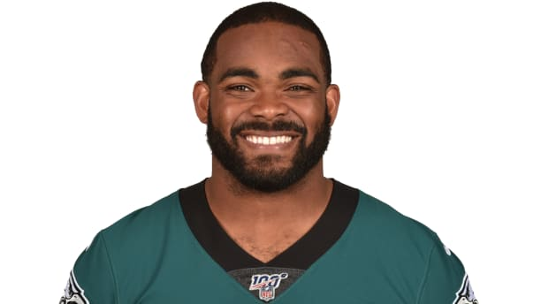

Brandon Graham
Biography:
Originally selected by Philadelphia with the 13th overall pick in the 2010 NFL Draft, Brandon Graham is the longest-tenured member of the Eagles. Graham, who ranks fifth on Philadelphia's all-time sacks list (51.0), recorded one of the top defensive plays in franchise history when he strip-sacked Patriots QB Tom Brady in the fourth quarter of Super Bowl LII.